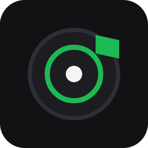

Small, focused tools that do one job properly.
Bad Duck Software is a one-person studio building desktop utilities that do one job properly — and then get out of the way.
Products

Teams Meeting Controls
Elgato Stream Deck plugin · Windows only
Mute, camera, raise hand, reactions, blur, share and leave — plus full PowerPoint Live control while a deck is up. Every key shows the real state of the meeting, so a muted mic looks muted before you press it.
Look at Teams Meeting Controls
AudioFuse Control
Elgato Stream Deck plugin · Windows and macOS
Mute, dim, mono, speaker sets and preset recall for an Arturia AudioFuse, with monitor level on a dial. Turn a knob on the unit and the key follows, because the state is read from the device rather than remembered.
Look at AudioFuse Control
Now Playing
Elgato Stream Deck plugin · Windows, Stream Deck + only
Album art, track and progress on a Stream Deck + dial, for anything that reports to Windows media controls. Press, tap, hold and turn each do what you pick — and volume moves that player, not the system slider.
Look at Now PlayingSupport
Questions, bug reports and licensing enquiries are all welcome. Bug reports are usually best filed on GitHub against the plugin in question, where they can be tracked to a release — each product page links to its own issue tracker.